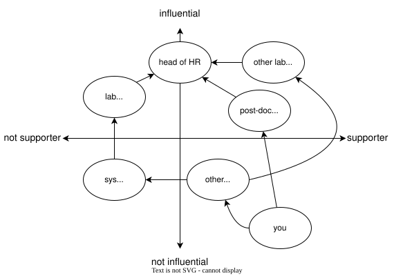

3 Power
figuring out who has it and how to influence them
3.1 Selectorate Theory
- Most research organizations aren’t democracies
- Faculty and students don’t elect the university president
- (Bueno de Mesquita and Smith 2022) explores how dictators stay in power
- Nominal selectorate: those who have the right to have a say
- Real selectorate: those who actually cast a vote
- Winning coalition: those whose votes produce victory
- Five rules:
- The smaller the winning coalition, the fewer people the person in charge needs to satisfy to remain in control.
- The larger the selectorate, the easier it is to replace dissenters.
- Extract as much as you can without provoking rebellion or recession.
- Give your essential supporters just enough rewards to keep them loyal.
- Do not reward them too well or they will become a threat.
- Lab directors and funding officers aren’t actually dictators, but…
3.2 Power Mapping
- Graphical tool to identify people to target and how to reach them
- Steps:
- Identify the (specific) people who can actually make the change you want.
- Plot where (you believe) they stand on the issue (two axes).
- Add people who can directly influence the people you identified in step 1.
- Repeat step 3 for the people you just added until you are part of the diagram.

Many people find power mapping uncomfortable, particularly if their map includes people who are also in the room. This discomfort is one of the reasons things don’t get better: thinking consciously about how to change people’s minds makes compassionate people squeamish (and feels much riskier than sequencing genomes).
But if we don’t do it, it will be done by people whom it doesn’t make uncomfortable. Both sociopaths and large organizations exist for the sole purpose of satisfying self-centered goals, and neither feels empathy, so it’s not surprising that the former tend to do well in the latter. While Edmund Burke never actually said, “The only thing necessary for evil to triumph is for good men to do nothing,” we owe it to those who fought to make our lives better to do the same.
3.3 Sabina’s Power Map
- The VP of Human Resources is generally supportive of DEI initiatives but doesn’t really understand open source and open science.
- The VP of Research thinks that “all this diversity stuff” distracts people from “real work.”
- The Chief Counsel worries about intellectual property loss and the risk of violating data privacy regulations.
- The Director of IT contributes to open source projects in their spare time, but feels depressed whenever they think about the quality of most scientists’ code.
- The other two senior data analysts are both supporters of the FAIR Principles, and believe that data analysis isn’t valued as highly by the company as it should be.
- The junior data analysts on their teams are mostly concerned about meeting performance targets and polishing their CVs…
- …except for the one self-professed libertarian who believes that white men are now victims of discrimination.
3.4 Exercises
3.4.1 Who’s in Charge?
- Who actually makes funding and work allocation decisions in your institution?
- Who do they need to keep happy, and how do they do this?
3.4.2 Power Mapping
- Pick a small but desirable change in your local environment and create a power map for it.
- Alternatively, translate the description of Sabina’s environment below into a power map.